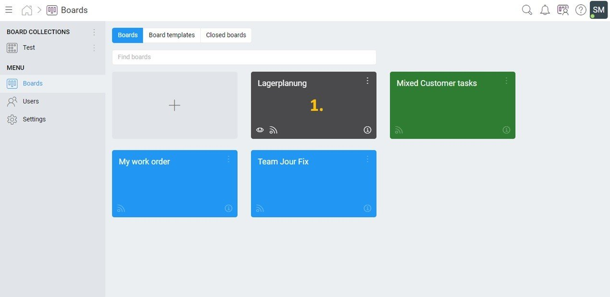
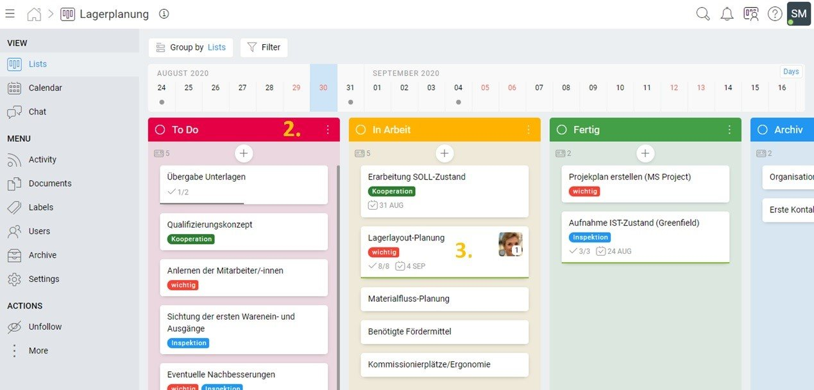
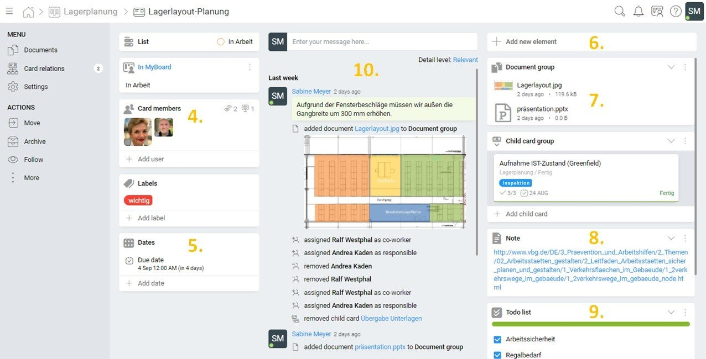

KanBo – Zusammenarbeit der Zukunft
Transparenz im Projekt, Verfügbarkeit und Aktualität aller Informationen sind das A und O für Ihre gewinnbringende Teamarbeit. Nur wenn Sie Zeitfresser wie Suchen, Rückfragen, unnötige Meetings und Störungen eliminieren, gewinnen Ihre Teams Zeit für hochwertige, strategische oder kreative Arbeit. Das richtige digitale Werkzeuge unterstützt Sie dabei. KanBo ist ein Werkzeug, das Sie in die Zusammenarbeit der Zukunft führen kann. Sollten Sie einen schnellen und individuellen Einstieg wünschen, buchen Sie einfach ein Kanbo Training.
Praxisbeispiel aus der Arbeitswelt ohne KanBo
Sie wurden bestimmt schon einmal für ein Projekt abgestellt, welches bereits seit einiger Zeit läuft. Jetzt freuen Sie sich darauf, die Beteiligten kennenzulernen, sich einzuarbeiten und Ihre Ideen in das interessante Thema einfließen zu lassen. Doch schnell wird klar, dass das nicht so einfach ist, wie es sein sollte. Wo finden Sie eine Liste mit allen Projektbeteiligten? Wo sind die notwendigen Dokumente? Welche Kommunikation hat zu dem Thema bereits mit wem stattgefunden?
Nach meiner Erfahrung läuft es dann häufig folgendermaßen ab: Von einem/-r Mitarbeiter/-in bekomme ich den Namen eines Beteiligten. Bei diesem frage ich nach den oben genannten Informationen. Am nächsten Tag schickt dieser mir eine Flut von E-Mail-Korrespondenzen sowie einen Ordnerpfad. Erschlagen von der Anzahl an E-Mails arbeite ich mich später am Tag durch ebendiese durch. In den Anhängen befinden sich zwar wichtige Dokumente, diese sind zum Zeitpunkt der Korrespondenz allerdings noch nicht vollständig. Also öffne ich den Ordnerpfad, um die fertiggestellten Dokumente zu sehen.
FEHLERMELDUNG: Sie haben keinen Zugriff auf den Ordner. Nachdem ich am nächsten Tag den verantwortlichen ITler herausgesucht habe, ist dieser leider noch bis Freitag im Urlaub. Am nächsten Montag erreiche ich ihn und stelle einen Antrag auf die Ordnerberechtigung. Zwei Tage später habe ich endlich die Grundvoraussetzungen für meine Arbeit an dem Projekt. Die generierte Verschwendung durch die lange Wartezeit kostet dem Projekt viel Zeit, mich Nerven, meinem Unternehmen Geld. So komme ich nicht in einen guten Arbeitsfluss.
Was ist bei KanBo anders?
Stellen Sie sich vor, Sie könnten, nachdem Sie einen Projektbeteiligten erreicht haben, bereits auf alle oben genannten Informationen zugreifen. Aber Sie sehen noch mehr und alles an einem Ort. Auf einen Blick erkennen Sie
- wer momentan an genau welcher Aufgabe arbeitet,
- welche Aufgaben ad hoc zu erledigen sind,
- welche Aufgaben in der Pipeline stecken,
- was bereits erledigt wurde,
- einen Änderungsverlauf aller Dokumente,
- eine Zuordnung der Dokumente zu den jeweiligen Aufgaben und
- eine Zuordnung aller Korrespondenzen zu den jeweiligen Aufgaben.
All das kann KanBo. Das Programm, vom Entwickler Michael Sobotkiewicz fasst alles zum Thema Datenspeicherung, Kommunikation und Arbeit zusammen. Das bietet großes Potential bezüglich der Zusammenarbeit in Teams. Statt zwischen mindestens drei Schnittstellen (z.B. E-Mail-Programm, Organisationstool, Ordnerstruktur) hin und her zu wechseln, muss man während der Projektarbeit lediglich ein einziges Programm öffnen. Das ist die Zusammenarbeit der Zukunft. Dadurch gewinnt das Team während der Arbeit wertvolle Zeit, da viele Klicks und hoher Suchaufwand vermieden werden. Wie das Ganze in der Praxis aussieht, zeige ich Ihnen jetzt. Aber Vorsicht: Nachdem Sie diese Art von Zusammenarbeit erst einmal gesehen haben, fällt es Ihnen sicher schwer, morgen nach den alten Routinen zu arbeiten.
KanBo – Aufbau, Funktionen, Nutzung
Im Groben besitzt KanBo vier Ebenen. Die erste ist die Board-Übersicht, die zweite ein Board selbst (Board-Ebene), die dritte besteht aus Lists (Listen) und die vierte aus Cards (Karten).
Board Übersicht
In folgender Abbildung sehen Sie die Board-Übersicht. Boards stehen für die einzelnen Projekte, bzw. Aufgabenbereiche. Sie können diese frei benennen, verschieben und Farben zuordnen.

Die interessanten Funktionen werden erkennbar, wenn man eines der Boards, in diesem Fall das mit 1. gekennzeichnete, auswählt:
Board-Ebene

Auf der Board-Ebene befinden sich die Listen (2.) und die Karten (3.). Wer es von den Lesern nicht schon im Namen des Programms „KanBo“ erkannt hat, oder spätestens nach dieser Ansicht, der benötigt einen kleinen Exkurs zum Thema Kanban.
Kanban ist eine Methode aus dem Toyota Produktionssystem, aus welchem das Lean Management hervorging. Das Ziel dabei ist es, einen bedarfsgerechten Materialfluss zu kreieren, bei dem die Nachfrager an der Produktion ziehen (Pull). Erst nach der Abarbeitung einer Aufgabe, widmet man sich einer neuen Aufgabe. So werden Engpässe und Überproduktion vermieden. Das erfolgt über die Kanban-Karten. Aus dem Japanischen übersetzt bedeutet Kanban „Signalkarte“. Ebendiese Signalkarten sind die Cards (3.) und der Programmname KanBo ist eine Anlehnung daran.
Spalten-Ebene
Diese Karten sind in Spalten angeordnet. Das sind die Listen (2.) bei KanBo. Nach Kanban-Methode muss es mindestens drei Listen geben: Ausstehend, in Arbeit, Fertig. In meinem Fall ist die „in Arbeit“-Liste als „To Do“-Liste benannt. Aber hier darf der Benutzer kreativ sein. Eine Karte, welche für eine Teilaufgabe des Projektes steht, durchläuft diese drei Listen bis zur Fertigstellung. Sie können diese über Drag-and-Drop in eine andere Liste ziehen.
Auf der linken Seite befindet sich ein Menü. Hier können Sie unter „Users“ Kollegen und Kolleginnen zu einem KanBo-Board hinzufügen. Ebenfalls können Sie über „Labels“ den einzelnen Karten Labels zuordnen. Hier sehen Sie z.B. die Labels „wichtig“, „Kooperation“ und „Inspektion“, dessen Farben Sie frei bestimmen können.
Card-Ebene
Über den Listen befindet sich zusätzlich ein Kalender. Am 04.09.2020 ist z.B. die Frist für die Karte „Lagerlayout-Planung“ (3.), welche Sie in der folgenden Abbildung sehen:

Dies ist der Ort, an dem die eigentliche Arbeit stattfindet. Sie sehen unter „Card members“ (4.), wer momentan an der Karte arbeitet und können hier Mitarbeiter/-innen auch zu einzelnen Karten hinzufügen. Unter 5. wird das Fälligkeits-Datum eingestellt, welches dann in der Kalenderansicht erscheint. Bei 6. können Sie neue Elemente hinzufügen. Hier wurden Dokumente hochgeladen (7.) sowie Notizen (8.) und To Do-Listen (9.) für die Karte angefertigt. Schließlich ist in der Mitte (10.) der komplette Verlauf zu sehen. Es ist schnell zu erkennen, wann welches Dokument hinzugefügt wurde und von wem. Auch Nachrichten können an dieser Stelle platziert werden.
Sie sehen also: Alles an einem Ort. Das war eine erste Einführung zur Nutzung von KanBo. Es gibt noch weitere interessante Funktionen. Hier sei z.B. die Analysemöglichkeit genannt, oder die Anzeige des eigenen, persönlichen Workflows. Dazu werden in Zukunft weitere Informationen folgen.
Sprechen Sie uns an, wenn Sie sich für KanBo und ein KanBo Training interessieren: info@zeitgewinn-hamburg.de. Sie können auch gern hier https://bookme.name/zeitgewinnhamburg einen Link für ein kostenfreies Vorgespräch buchen
Weitere Artikel

Regeln für KI im Office
ChatGPT & Co haben sich schnell in die Herzen und Alltag von vielen Menschen im Berufs- und Privatleben gespielt. Diese neuen Werkzeuge eröffnen uns viele Chancen, nicht nur effizienter zu werden, sondern auch kreativer. Aber …

KI als Copilot für die Assistenz
KI in Form von ChatGPT & Co sind hervorragende neue Werkzeuge im Office-Alltag, um produktiver und ja, auch kreativer, zu werden. Neugier statt Angst ist angezeigt im Umgang mit diesen Werkzeugen, die wie andere Werkzeuge auch …